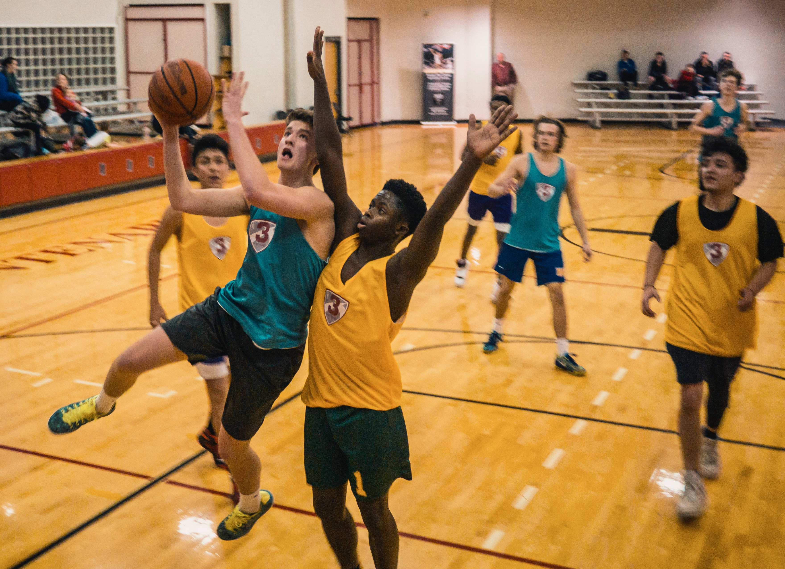

| number |
DRILL |
IMAGE |
BENEFIT. |
| 1 |
Two-ball dribbling. |
 |
- This forces the players to use both eyes.
- Improves on muscle memory.
- Ensures eye focusing.
- Increases speed while at the play area.
|
| 2 |
Defensive lane sides. |
 |
- It helps to play good defence without picking up a foul.
- It helps to improve hand-eye coordination.
- increases the surface area for making good layups.
- Encourages a strong defence.
|
| 3 |
The Mikan. |
 |
- The drill helps bigger players like centers and power forwards to
get a shot smoothly whe tey are close to the basket.
- It keeps the ball high keeping it away from defenders.
|
| 4 |
Transition and Weave drills. |
 |
- They teach players how to use a fast break to exploit an offensive mismatch.
- They help in the passing skills' improvement .
|